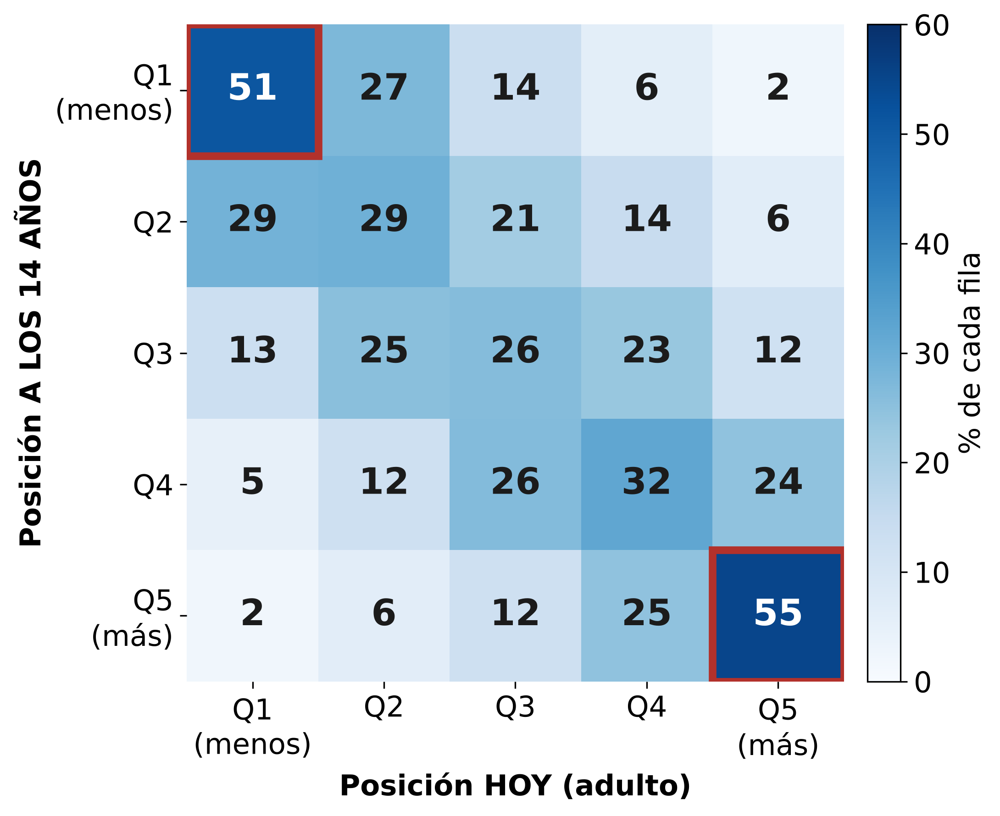
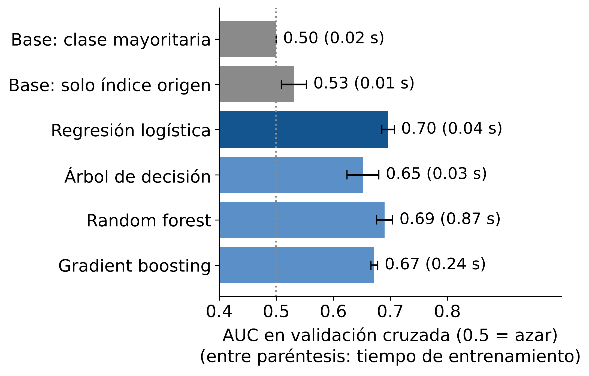
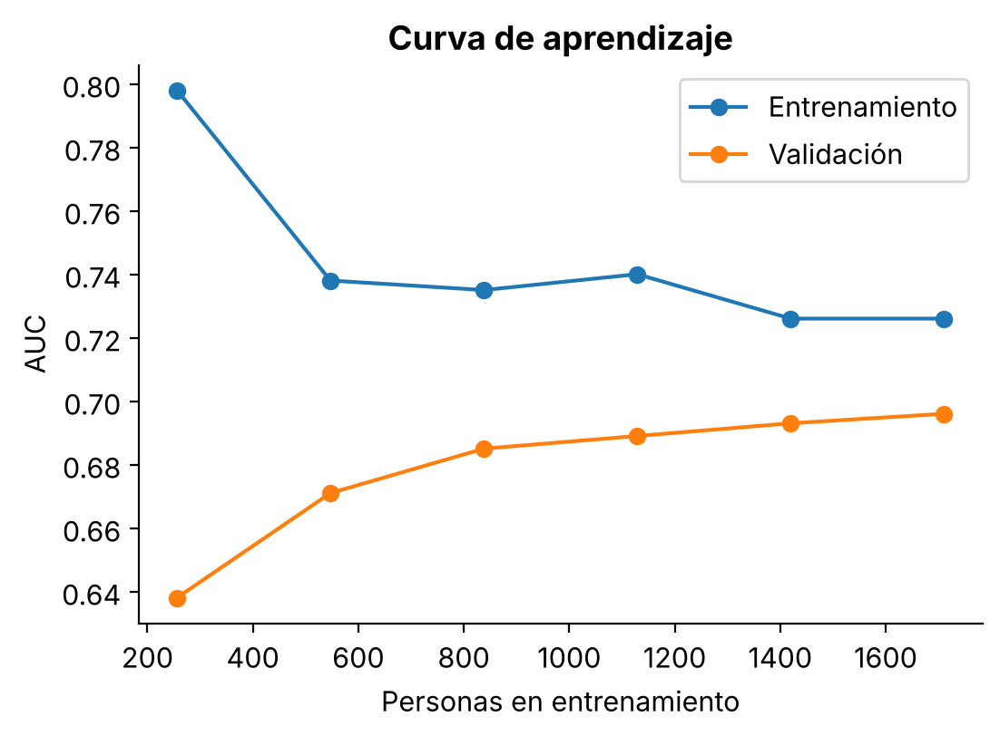
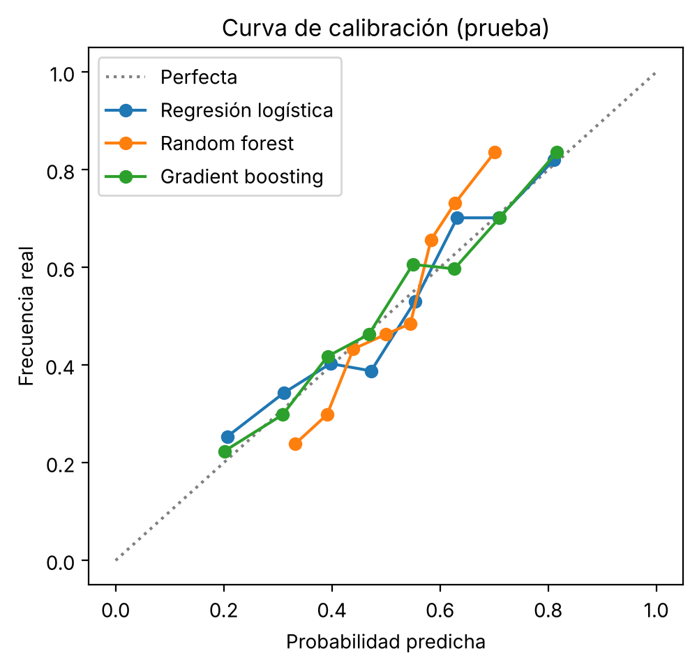

Reporte final · Proyecto Integrador · Tercer semestre
¿Qué tan pegajosa es la pobreza?
Persistencia en la base de la distribución de bienes y desigualdad de oportunidades en México: evidencia de la ESRU-EMOVI 2023 con estadística y Machine Learning
Equipo: José Marihano Ponce Campos · Tanya Melina Alvarez Velazquez · Luis David Velazquez Raíz Profesor: Iván Alejandro Toledano Juárez Materias: Machine Learning e Inferencia Bayesiana / Matemáticas Aplicadas a la Ciencia de Datos Institución: Universidad de Guadalajara, Centro Universitario de Guadalajara (CUGDL) · Noviembre de 2026 Código y datos: github.com/xmarihano-pixel/Movilidad-social- (notebooks 00–08, auditoría y bitácora de decisiones)
Resumen. Con la Encuesta ESRU de Movilidad Social en México 2023 (17,843 personas de 25 a 64 años), medimos cuántas personas que crecieron en el 20% de hogares con menos bienes siguen ahí de adultas y qué circunstancias de origen se asocian con quedarse. El 51.1% (IC 95%: 46.3–55.4%) sigue en ese 20%; solo el 2.3% llega al 20% con más bienes. La persistencia es mayor para quienes crecieron en el Sur, en localidades rurales o hablan una lengua indígena, y estas desventajas se acumulan (de 30% a 82%). Comparamos seis modelos de clasificación: la regresión logística (AUC 0.70) iguala a random forest y gradient boosting y fue elegida por ser estable, rápida e interpretable. Una auditoría independiente reprodujo los resultados, corrigió la estimación de la incertidumbre y retiró un hallazgo que no se sostenía. Todos los resultados son asociaciones, no efectos causales.
1. Introducción y planteamiento del problema
Problemática. La pobreza suele medirse como una fotografía: cuántas personas tienen carencias hoy. Esa medición no dice si la desventaja se hereda. La movilidad social intergeneracional compara la posición socioeconómica de una persona con la del hogar en el que creció; si el origen determina mucho el destino, hay poca igualdad de oportunidades. En México, el Centro de Estudios Espinosa Yglesias (CEEY) ha documentado una alta persistencia en los extremos y fuertes brechas regionales [2], en línea con la literatura internacional sobre la "geografía de las oportunidades" [3].
Pregunta. De quienes crecieron en el 20% de hogares con menos bienes de su generación, ¿cuántos siguen ahí de adultos y qué circunstancias de origen se asocian con quedarse?
Objetivo. Medir la persistencia en la base de la distribución y comparar modelos estadísticos y de Machine Learning que identifiquen las circunstancias asociadas, distinguiendo asociación, capacidad predictiva y causalidad.
Relevancia. Saber cuánto pesa el origen, y para quién pesa más, ayuda a orientar el debate sobre igualdad de oportunidades. Desde el punto de vista técnico, el ML permite evaluar muchas circunstancias a la vez y, sobre todo, medir el límite de lo que esas circunstancias explican.
2. Descripción de los datos
Fuente principal: ESRU-EMOVI 2023 del CEEY [1]. Es una encuesta transversal con preguntas retrospectivas: cada persona describe el hogar en el que vivía a los 14 años (bienes, servicios, escolaridad y ocupación de sus padres, localidad) y su hogar actual. Tiene 17,843 observaciones, 296 variables, factor de expansión (representa a 60.0 millones de personas) y diseño muestral (estratos y unidades primarias de muestreo, UPM). Fuentes complementarias: medición de pobreza de CONEVAL 2022 [5] e informalidad laboral de la ENOE 2022 (INEGI) [6], resumidas por estado. Nuestro cálculo de pobreza nacional (36.3%) y pobreza extrema (7.1%) coincide con las cifras oficiales, lo que valida su procesamiento. Estas fuentes no comparten identificadores con la EMOVI, por lo que solo se usan como contexto estatal.
Tabla 1. Variables relevantes
Grupo
Variables
Uso
Objetivo
sigue_q1: creció en el quintil 1 (Q1) de bienes y sigue en Q1 de adulto (1 = sí)
Variable a predecir
Origen (a los 14 años)
Índice de bienes del hogar; escolaridad de madre y padre; ocupación del padre; región y tamaño de localidad; hacinamiento; hermanos; servicios del barrio
Predictores
Características dadas
Sexo, cohorte de edad, lengua indígena, tono de piel autopercibido, autoadscripción étnica
Predictores
Destino (hoy)
Índice de bienes actual, escolaridad propia, empleo formal, ingreso
Construyen el objetivo o se usan solo en un modelo de mediación
Diseño
Factor de expansión, UPM, estrato
Ponderación e inferencia
Tipo de problema.Clasificación binaria (seguir o no en Q1) sobre las 2,674 personas que crecieron en Q1, con clases casi balanceadas (52/48). De forma complementaria se hizo clasificación en tres clases (ascenso, permanencia, descenso) y clustering (K-Means) para describir perfiles.
3. Limpieza y preparación de datos
Valores faltantes. Los códigos "No sabe" se convirtieron en faltantes explícitos. En los bienes del hogar son menos del 5% por variable y se reemplazaron por la media solo para construir el índice. La escolaridad del padre falta en 19% de los casos y la de la madre en 10%; como su ausencia no es aleatoria (quienes no tienen el dato del padre siguen en Q1 con más frecuencia: 60% vs 48%), se conservó como categoría propia ("No sabe / ausente") en lugar de imputarla. No se eliminó ninguna observación.
Construcción del objetivo. Con 45 variables de bienes y servicios del hogar a los 14 años y 46 del hogar actual se construyeron dos índices de riqueza con análisis de componentes principales (PCA). Cada índice se convirtió en quintiles ponderados dentro de cada cohorte de edad, para comparar a cada persona con su propia generación.
Variables categóricas y escalamiento. Codificación one-hot (las categorías con menos de 30 casos se agrupan automáticamente) y estandarización de las variables numéricas para la regresión logística. La imputación con la mediana y el escalamiento están dentro del pipeline, de modo que se ajustan solo con los datos de entrenamiento.
Selección de variables y leakage. Se excluyeron como predictores todas las variables medidas en el destino (bienes actuales, escolaridad propia, ocupación, ingreso), porque forman parte de la respuesta.
Outliers y pesos. No se eliminaron valores extremos (en un estudio de desigualdad pueden ser reales). Los factores de expansión se usan en las tasas descriptivas y en el modelo explicativo; los modelos predictivos se entrenaron sin pesos porque estos varían de 4 a 144,889 y desestabilizan el ajuste.
4. Análisis exploratorio
Los índices son consistentes con medidas externas: el índice de destino se correlaciona con el logaritmo del ingreso per cápita (r = 0.61) y el de origen con la escalera subjetiva de los entrevistados (r = 0.50). La matriz de transición (Figura 1) muestra que los extremos son los más persistentes: el 51% de quienes crecen en Q1 sigue en Q1 y el 55% de quienes crecen en Q5 sigue en Q5; solo el 2.3% pasa de Q1 a Q5. Con otras dos definiciones (quintiles sin separar por cohorte o destino medido con ingreso) la persistencia está entre 47% y 51%.

Figura 1. Porcentaje de cada quintil de origen (filas) que termina en cada quintil de destino (columnas). Ponderado.Figura 2. Porcentaje que sigue en Q1 por grupo, con IC 95% por bootstrap de conglomerados. *Escolaridad propia: mediadora, no es circunstancia de origen.
Relaciones identificadas (Figura 2). La persistencia es de 64% entre quienes crecieron en el Sur y de 23% en el Norte; de 69% entre quienes hablan una lengua indígena y de 47% entre quienes no; de 55% en pueblos de menos de 2,500 habitantes. Al combinar las tres desventajas (Sur, pueblo y lengua indígena) la persistencia sube de 30% (ninguna) a 82% (las tres). La escolaridad propia separa mucho (56% con primaria o menos vs 18% con estudios profesionales), pero se mide al mismo tiempo que el destino. Por tono de piel, los intervalos de confianza se traslapan: no hay una brecha nacional significativa con estos datos.
Comportamiento de los datos. Con los factores de expansión, las 2,674 personas de Q1 equivalen a unas 815 observaciones independientes (tamaño efectivo de Kish). Por eso todas las tasas se reportan con intervalos que respetan el diseño muestral, y los grupos pequeños (Norte, n efectivo ≈ 44) tienen intervalos amplios. La relación entre la pobreza estatal (CONEVAL 2022) y la persistencia por estado (r ≈ 0.56) es solo exploratoria, porque la EMOVI no es representativa por estado.
5. Modelado de Machine Learning Machine Learning e Inferencia Bayesiana
Validación. Partición 80/20 estratificada (2,139 / 535 personas), validación cruzada estratificada de 5 particiones en el entrenamiento y semilla fija (42). Métricas: AUC (capacidad de ordenar el riesgo, independiente del umbral; métrica principal), exactitud balanceada, F1, puntuación de Brier (calibración) y tiempo de entrenamiento.
Tabla 2. Modelos utilizados
Modelo
Descripción breve
Justificación
Base: clase mayoritaria
Predice siempre la clase más frecuente
Piso mínimo (AUC = 0.5)
Base: solo índice de origen
Logística con un predictor
¿Basta con la riqueza de origen?
Regresión logística
Modelo lineal en los log-momios con regularización L2 ($C = 0.5$)
Interpretable (razones de momios); permite inferencia
Árbol de decisión
Particiones binarias por impureza de Gini (profundidad 4, ≥ 50 por hoja)
Reglas legibles; capta interacciones
Random forest
400 árboles con bagging y $\sqrt{p}$ variables por corte (≥ 20 por hoja)
Tabla 3. Resultados (CV: validación cruzada en entrenamiento; prueba: 535 personas no vistas)
Modelo
AUC CV (±desv.)
AUC prueba
Exact. balanceada
F1
Brier
Tiempo (s)
Base: clase mayoritaria
0.500
0.500
0.500
0.682
0.250
0.02
Base: solo índice de origen
0.531 (±0.022)
0.556
0.533
0.642
0.248
0.01
Regresión logística ★
0.696 (±0.011)
0.716
0.670
0.683
0.214
0.04
Árbol de decisión
0.652 (±0.028)
0.681
0.655
0.673
0.226
0.03
Random forest
0.690 (±0.014)
0.722
0.652
0.679
0.219
0.87
Gradient boosting
0.672 (±0.006)
0.721
0.659
0.671
0.213
0.24
Análisis de resultados. Todos los modelos superan claramente a las dos bases. Que el índice de origen por sí solo apenas supere al azar (AUC 0.53) indica que, dentro del 20% más pobre, lo que distingue a quien sale de quien se queda no es tener un poco más de bienes, sino el territorio, la lengua y la estructura del hogar. El árbol de decisión es el más débil e inestable. Random forest y gradient boosting igualan a la logística en la partición de prueba (diferencias ≤ 0.01), pero no la superan en validación cruzada. La matriz de confusión de la logística en prueba es equilibrada: recall de 0.69 para quienes siguen en Q1 y de 0.66 para quienes salen. Como las clases están casi balanceadas, usar class_weight="balanced" no cambia el AUC (0.696 en ambos casos).
Modelo explicativo. Para interpretar magnitudes se ajustó una regresión logística ponderada con errores estándar agrupados por UPM (Tabla 4). Con lo demás constante, crecer en el Sur (frente al Centro), en un pueblo (frente a una ciudad) o hablar una lengua indígena se asocia con 1.5 a 1.9 veces los momios de seguir en Q1. Estos resultados se mantienen sin factores de expansión. El tono de piel y el sexo no fueron significativos.
Tabla 4. Razones de momios (RM) seleccionadas
Variable (referencia)
RM
IC 95%
p
Habla lengua indígena
1.88
1.23–2.88
0.004
Creció en el Sur (Centro)
1.84
1.28–2.65
0.001
Padre ausente / sin dato
1.57
1.05–2.36
0.029
Creció en pueblo (ciudad)
1.52
1.11–2.09
0.009
Tono oscuro (medio)
1.32
0.92–1.90
0.134
Mujer
1.30
0.98–1.73
0.070
Índice de origen (+1 punto)
0.65
0.53–0.81
<0.001
Creció en el Norte (Centro)
0.39
0.19–0.80
0.010
Cohorte 55–64 (25–34)
0.19
0.10–0.35
<0.001
Figura 3. Razones de momios con IC 95% (escala log). Gris = no significativo.
Interpretabilidad del modelo complejo. La importancia por permutación (logística) y los valores SHAP (gradient boosting) coinciden en las tres variables principales: región de origen, cohorte e índice de origen. Que dos métodos con supuestos distintos lleguen al mismo orden refuerza la conclusión. Perfiles (K-Means, k = 4): el grupo "indígena, rural y del Sur" tiene 69% de persistencia y el grupo "urbano" 36%; estos perfiles son descriptivos, no causales.
6. Comparación y selección de modelos
Tabla 5. Matriz de decisión
Criterio
Logística
Árbol
Random forest
Gradient boosting
Desempeño (AUC CV)
0.696
0.652
0.690
0.672
Robustez: AUC con 10 semillas (media ± desv.)
0.701 ± 0.002
—
0.697 ± 0.003
0.689 ± 0.004
Interpretabilidad
Alta (RM, IC, p)
Media (reglas)
Baja (requiere SHAP)
Baja (requiere SHAP)
Complejidad
55 coeficientes
≤ 16 hojas
400 árboles
300 árboles
Tiempo de entrenamiento
0.04 s
0.03 s
0.87 s
0.24 s
Comportamiento ante estos datos
Calibrada por subgrupo; se satura con poca muestra
Inestable entre particiones
Estable; sin ganancia por no linealidad
Estable; sin ganancia

Figura 4. AUC en validación cruzada (± desviación) y tiempo de entrenamiento.

Figura 5. Curva de aprendizaje de la logística: la validación se estabiliza cerca de 0.70 y la brecha con el entrenamiento es pequeña (≈ 0.03).
Selección. Elegimos la regresión logística con una regla fijada antes de ver los resultados: si un modelo interpretable está a menos de 0.01 de AUC del mejor, se prefiere el interpretable. La logística obtuvo el AUC más alto en validación cruzada y con 10 semillas, es la más estable y una de las más rápidas, y sus parámetros tienen interpretación directa. Que los modelos no lineales no la superen sugiere que, en estos datos, la relación es esencialmente aditiva; lo confirma la prueba de interacciones (Sur × pueblo × lengua: p = 0.20). La curva de aprendizaje (Figura 5) muestra que más datos ayudarían poco: el límite está en la información disponible, no en el algoritmo.
7. Desarrollo matemático y fundamentos teóricos Matemáticas Aplicadas a la Ciencia de Datos
7.1 Regresión logística (modelo seleccionado)
Formulación. Sea $y_i \in \{0,1\}$ el indicador de que la persona $i$ sigue en Q1 y $\mathbf{x}_i \in \mathbb{R}^p$ su vector de circunstancias de origen (con las categorías codificadas como variables indicadoras). El modelo supone que
Interpretación de los parámetros. Si la variable $x_{j}$ aumenta en una unidad y lo demás queda fijo, los momios se multiplican por $e^{\beta_j}$, que es la razón de momios. En nuestros datos, para "habla lengua indígena" $\hat\beta = \ln 1.88 = 0.63$: los momios de seguir en Q1 son 1.88 veces los de una persona comparable que no la habla. Para el índice de origen, $e^{\hat\beta} = 0.65$: cada punto adicional del índice reduce los momios en 35%.
Función de costo. Los parámetros se estiman maximizando la verosimilitud de Bernoulli $L(\boldsymbol\beta) = \prod_i p_i^{y_i}(1-p_i)^{1-y_i}$. Equivale a minimizar la entropía cruzada (log loss) con un término de regularización L2 que evita coeficientes inflados en categorías pequeñas:
Algoritmo de optimización. El gradiente y la matriz hessiana son
$$\nabla J = X^\top(\mathbf{p} - \mathbf{y}) + \tfrac{1}{C}\boldsymbol\beta, \qquad H = X^\top W X + \tfrac{1}{C} I, \quad W = \mathrm{diag}\big(p_i(1-p_i)\big).$$
Como $W$ tiene entradas positivas, $H$ es definida positiva: $J$ es estrictamente convexa y tiene un único mínimo global. No hay solución cerrada, así que se usa un método iterativo. scikit-learn usa L-BFGS (cuasi-Newton, que aproxima $H$ con los últimos gradientes); el modelo explicativo de statsmodels usa el método de Newton en su forma de mínimos cuadrados reponderados iterativamente (IRLS): $\boldsymbol\beta^{(t+1)} = \boldsymbol\beta^{(t)} - H^{-1}\nabla J$.
Una consecuencia matemática que usamos. En el óptimo sin penalización, $\nabla J = 0$ implica $X^\top(\mathbf{y} - \mathbf{p}) = 0$. Para la columna de una variable indicadora (por ejemplo, "tono oscuro") esto significa que la probabilidad media predicha del grupo es igual a su tasa observada: el modelo queda calibrado por construcción en cada categoría incluida. Esto explica por qué, con predicciones fuera de muestra, la brecha real − predicha por tono de piel fue prácticamente cero.
Supuestos. (1) Linealidad en los log-momios; las variables categóricas la cumplen por construcción y la prueba de interacciones no la rechazó. (2) Independencia entre observaciones; no se cumple dentro de una misma UPM, por lo que la inferencia usa errores agrupados. (3) Ausencia de multicolinealidad perfecta; el factor de inflación de la varianza (VIF) máximo es 2.7. (4) Ausencia de separación perfecta: con solo 2 madres profesionistas en Q1, $\hat\beta \to \infty$ (RM ≈ 6×10⁸), así que se agruparon las categorías en "Secundaria o más".
Inferencia con diseño muestral. El modelo explicativo maximiza una pseudo-verosimilitud ponderada por los factores $w_i$. Su varianza se estima con el estimador "sándwich" por conglomerados $g$ (UPM):
En la auditoría, este estimador se programó a mano y sus errores estándar coincidieron exactamente con los de statsmodels.
7.2 Random forest
Árbol de clasificación. Un árbol divide el espacio de predictores en regiones $R_1,\dots,R_M$ y predice en cada una la proporción $\hat p_m$ de casos con $y = 1$. En cada nodo elige la variable $j$ y el corte $s$ que más reducen la impureza de Gini:
Función de costo y optimización. El árbol minimiza la impureza ponderada de las hojas. Encontrar el árbol óptimo es un problema NP-difícil, así que se usa un algoritmo voraz (CART): en cada nodo se prueban todos los cortes posibles y se elige el de mayor $\Delta$, hasta cumplir el criterio de parada (mínimo 20 personas por hoja).
Bosque. Se entrenan $B = 400$ árboles, cada uno sobre una muestra bootstrap de los datos y considerando en cada corte solo $m = \sqrt{p}$ variables elegidas al azar. La predicción es el promedio $\hat p(\mathbf{x}) = \frac{1}{B}\sum_{b=1}^{B}\hat p_b(\mathbf{x})$. Si cada árbol tiene varianza $\sigma^2$ y la correlación entre árboles es $\rho$:
Promediar muchos árboles elimina el segundo término, y elegir variables al azar reduce $\rho$. Por eso el bosque es mucho más estable que un solo árbol: la desviación entre semillas fue de 0.003, frente a 0.028 entre particiones para el árbol.
Supuestos e interpretación. Random forest no supone una forma funcional: puede captar no linealidades e interacciones. Su costo es que no tiene parámetros interpretables; para interpretarlo se usan la importancia por permutación (pérdida de AUC al revolver una variable) y los valores SHAP, que reparten cada predicción entre las variables según la teoría de juegos (valores de Shapley) [9]. En este proyecto, que el bosque no superara a la logística es evidencia de que la relación es esencialmente aditiva.
7.3 Componentes principales (índice de riqueza) e interpretación de métricas
PCA. Con la matriz $Z$ de bienes estandarizados, el índice es la proyección sobre el primer vector propio de la matriz de covarianzas: $\mathbf{v}_1 = \arg\max_{\lVert\mathbf{v}\rVert=1}\mathbf{v}^\top\Sigma\mathbf{v}$, es decir, $\Sigma\mathbf{v}_1 = \lambda_1\mathbf{v}_1$, y el índice de cada persona es $s_i = \mathbf{z}_i^\top\mathbf{v}_1$ [7]. El primer componente explica el 21.6% de la varianza en el origen; sus cargas más altas son lavadora, refrigerador, baño, calentador y agua entubada, es decir, el índice resume sobre todo el acceso a servicios básicos.
AUC. Es la probabilidad de que el modelo asigne mayor riesgo a una persona que sigue en Q1 que a una que sale, elegidas al azar: $\mathrm{AUC} = P(\hat p_i > \hat p_j \mid y_i = 1, y_j = 0)$. Un AUC de 0.70 significa que el modelo ordena correctamente el 70% de esos pares. Brier: $\frac{1}{n}\sum_i(\hat p_i - y_i)^2$ mide la calibración (0.214 frente a 0.25 del baseline).
8. Resultados y discusión
Interpretación de métricas. Un AUC de 0.70 es moderado, y eso es un hallazgo: las circunstancias observadas explican solo una parte del destino. El resto corresponde a factores que la encuesta no mide (calidad escolar, redes, salud, choques económicos), no a un "mérito" demostrado. El Brier de 0.214 y la curva de calibración (Figura 6) indican probabilidades razonablemente bien calibradas.
Fortalezas. Encuesta representativa con origen y destino de la misma persona; resultados robustos con tres definiciones del objetivo y con y sin pesos; coincidencia entre el modelo interpretable y el complejo; reproducción completa (29 de 29 tablas idénticas).

Figura 6. Curva de calibración en el conjunto de prueba: las probabilidades predichas siguen de cerca las frecuencias observadas.
Limitaciones y fuentes de sesgo. (1) Recuerdo: el origen se reporta de memoria; por eso se usan bienes, que se recuerdan mejor que el ingreso. (2) Supervivencia: no están quienes murieron o emigraron. (3) Variables medidas hoy: la lengua, el tono de piel autopercibido y la autoadscripción podrían reflejar en parte el destino. (4) Diseño transversal: no permite afirmar causalidad. (5) Muestra efectiva: pequeña en algunos grupos (Norte) y no representativa por estado. (6) La escolaridad y el empleo se miden junto con el destino, por lo que no son circunstancias de origen.
Reflexión sobre el comportamiento de los modelos y sobre el proceso. Los modelos no lineales no aportaron ganancia, lo que coincide con una estructura aditiva de las desventajas. Una auditoría independiente detectó dos problemas que corregimos: (a) los intervalos de confianza ignoraban el diseño muestral (el IC titular pasó de 48–55% a 46–55%), y (b) un supuesto "sesgo del modelo de 11 puntos contra las personas de tono oscuro" provenía de una sola partición de prueba con 114 personas; con predicciones fuera de muestra para las 2,674 personas la brecha es prácticamente nula y el hallazgo se retiró. Al corregir la categoría de referencia de la localidad apareció un resultado nuevo: crecer en un pueblo sí se asocia con más persistencia (RM 1.52). Escenarios hipotéticos (modelo de mediación): bajo el supuesto de un nivel educativo más y empleo formal, y manteniendo las relaciones estimadas, la persistencia sería unos 16 puntos menor (IC: 12 a 19). Son asociaciones, no efectos de política.
9. Conclusiones y trabajo futuro
Principales hallazgos. (1) La desventaja es pegajosa: cerca de la mitad de quienes crecen en el 20% de hogares con menos bienes sigue ahí de adulta, y casi nadie llega al extremo superior. (2) La persistencia se concentra en el Sur, en localidades rurales y entre hablantes de lengua indígena, y estas desventajas se suman. (3) La escolaridad es la característica más asociada con haber salido, pero no basta: el 43% de quienes superaron la escolaridad de sus padres sigue en Q1. (4) La regresión logística iguala a los modelos complejos; las circunstancias de origen observadas predicen el destino solo de forma moderada (AUC ≈ 0.70).
Limitaciones identificadas. Diseño transversal y retrospectivo, sin causalidad; validez nacional y regional, no estatal; variables de identidad medidas en el presente.
Mejoras y líneas de trabajo futuras.
Comparar con la EMOVI 2011 y 2017 con la misma metodología, para separar el efecto de cohorte del ciclo de vida.
Unir indicadores municipales del censo del año en que cada persona tenía 14 años (la EMOVI registra el municipio de origen), en lugar de datos de 2022.
Usar un diseño cuasi-causal para la educación (por ejemplo, reformas de escolaridad obligatoria como experimento natural).
Modelos multinivel (persona–municipio) y estimación de áreas pequeñas para obtener resultados estatales defendibles.
Un enfoque bayesiano jerárquico por región, que permitiría estimar mejor las tasas de los grupos pequeños compartiendo información entre regiones.
10. Referencias
[1] Centro de Estudios Espinosa Yglesias (CEEY). Encuesta ESRU de Movilidad Social en México 2023 (ESRU-EMOVI 2023): base de datos y diccionario. https://ceey.org.mx
[2] CEEY (2019). Informe de Movilidad Social en México 2019: Hacia la igualdad regional de oportunidades. Ciudad de México: CEEY.
[3] Chetty, R., Hendren, N., Kline, P. y Saez, E. (2014). Where is the land of opportunity? The geography of intergenerational mobility in the United States. The Quarterly Journal of Economics, 129(4), 1553–1623. https://doi.org/10.1093/qje/qju022
[4] Campos-Vázquez, R. M. y Medina-Cortina, E. M. (2019). Skin color and social mobility: Evidence from Mexico. Demography, 56(1), 321–343.
[5] CONEVAL (2023). Medición de la pobreza 2022: programas de cálculo y bases de datos. https://www.coneval.org.mx
[6] INEGI (2023). Encuesta Nacional de Ingresos y Gastos de los Hogares 2022 y Encuesta Nacional de Ocupación y Empleo 2022. https://www.inegi.org.mx
[7] Filmer, D. y Pritchett, L. H. (2001). Estimating wealth effects without expenditure data—or tears. Demography, 38(1), 115–132.
[8] Breiman, L. (2001). Random forests. Machine Learning, 45(1), 5–32. https://doi.org/10.1023/A:1010933404324
[9] Lundberg, S. M. y Lee, S.-I. (2017). A unified approach to interpreting model predictions. Advances in Neural Information Processing Systems, 30.
[10] Hosmer, D. W., Lemeshow, S. y Sturdivant, R. X. (2013). Applied Logistic Regression (3.ª ed.). Wiley.
[11] Pedregosa, F. et al. (2011). Scikit-learn: Machine learning in Python. Journal of Machine Learning Research, 12, 2825–2830. · Seabold, S. y Perktold, J. (2010). statsmodels. · Bibliotecas: pandas, NumPy, SHAP, matplotlib, pyreadstat (versiones en requirements.txt).
Uso de IA generativa: se utilizó como apoyo para programar, documentar y auditar; las decisiones metodológicas y la interpretación fueron revisadas y aprobadas por el equipo (bitácora de decisiones en el repositorio).